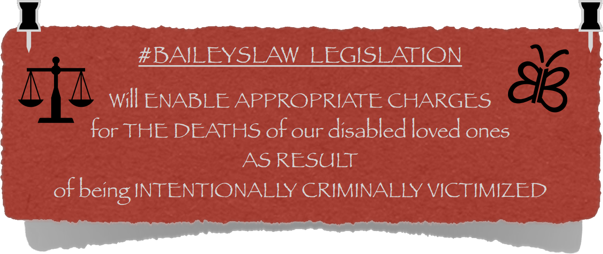
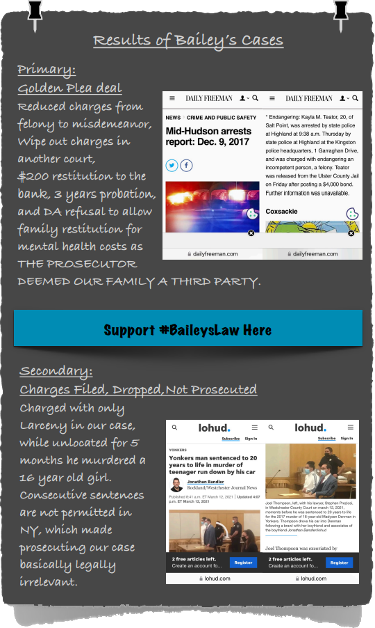

#BaileysLaw
Read Story/Sign The Petition
Bailey's Law Bill
Obituary
DONATE
Follow
Current Projects
OVS Bill Extending Benefits
#HumanityStones
Contact


![July 31 2017 I died… today… How am I breathing?... PRIMARY MEMORIAL TEXT - I don't know how I'm breathing… Where am I? This isn't real… He was JUST here… This can't be real? Where am I? I literally felt it all implode as my being was enveloped, crushed, and drained while being pulled into a mental wormhole that defies spacetime… I died today… Because My Son died today… The breathing lives left behind will never be okay again… And I… I… Bailey's Mom…. I WILL NEVER BE OKAY, EVER AGAIN…. -Bailey's Mom- #BaileysLaw... SECONDARY MEMORIAL TEXT - Our loving humanist, Bailey… DIED in 2017, an INTENDED crime victim at only 19 years old on his mother’s Bailey is still by CHERISHED family, friends, members of the He was autistic, a critter-whisperer, most known for his smile, art, warmth, and humor.](./assets/img/v3-section-memorial-v2.png)